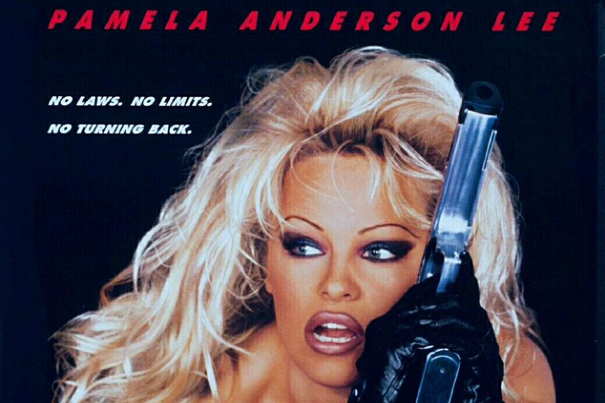

Proposal

Girls have been taught to look and act a specific way for years, particularly to appeal to the patriarchy. "Girls should be seen and not heard. Girls should look pretty, and as defined by societal standards. Girls should cover up. Girls should do what they're told. Girls should be "ladies" (whatever that means). Girls should be emotionally, and not physically, strong". Rather than doing what feels right for them, females often act in respect of their male counterparts.
Pamela Anderson's career is a prime example of how women suffer from internalized misogyny and objectification. Her private sex tape with husband Tommy Lee was stolen and leaked to the whole world. Hulu's Pam and Tommy depicts this series of events and sheds light on the incident. However, it also glamorizes the situation and exploits Anderson by profiting off of her exploitation as well.
Neither Anderson nor Lee consented to sharing their story for the show; the producers got most of their information from the Rolling astones article "Pam and Tommy: The Untold Story of the World's Most Infamous Sex Tape." Beyond shadow of a doubt, Tommy Lee expressed his confusion about why she would not want any part of it. He believes just as he did when the sextape leaked that any press is good press. For Anderson, her story being published without her permission surfaces the same traumatic feelings she had when the sex tape was released. When asked to comment, Anderson relayed that she doesn't read the headlines and is "focused on her philanthropic efforts and wants any press she ever gets to be about that now."
Anderson is currently involved in multiple philanthropic projects, including a 'Climate Revolution' with Vivienne Westwood, the Courage Foundation, PETA and many more.
My goals for this project include depicting the narrative that Anderson is notorious for, but then ultimately changing it. I would like to set the story straight, deconstruct the male gaze and ultimately empower women that interact with the site and provide sources that can help uplift them. Examples of sources include programs or activities that build self-esteem, access to mental health services, and more.
My visual inspiration will be taken from the 90's. I have been really drawn towards the colors, patterns and shapes from the era. I would like to encapsulate the retro computer concepts pictured in the show. The nostalgic patterns and designs will strengthen the concept but also look playful and fun. This will benefit the interactive aspect of the project.